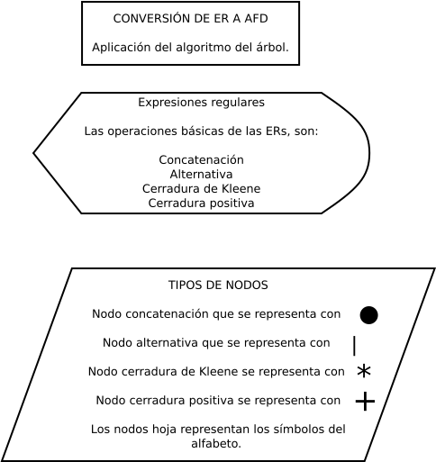
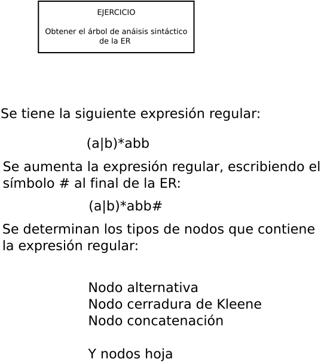
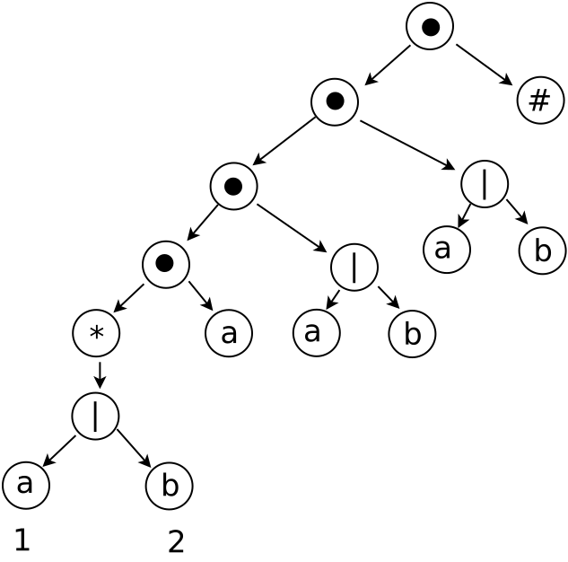
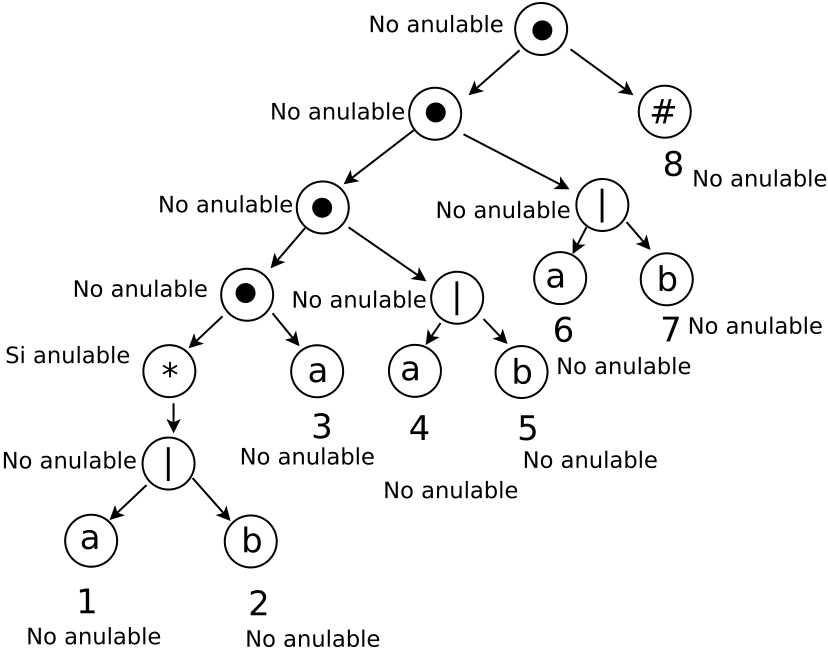
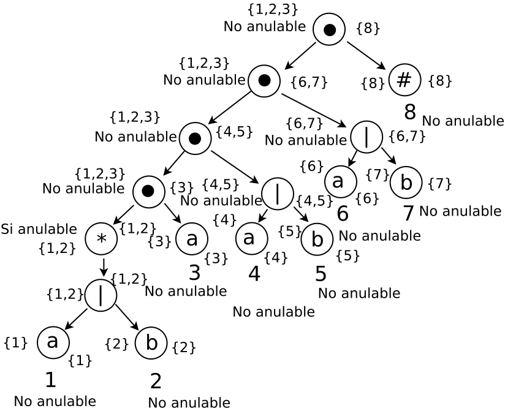
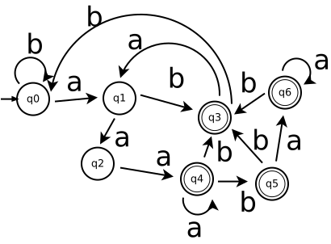

Diagrama a bloques del proceso de construcción de un analizador léxico
La conversión de ER a AFD. Se aplica un algoritmo diferente al algoritmo de subconjuntos. La aplicación de este algoritmo usa un árbol de análisis sintáctico:

Conversión de ER a AFD
Definiciones. Para poder hacer la conversión se requieren las siguientes funciones: anulable(), primerapos(), siguientepos(), ultimapos(). Y también el árbol de análisis sintáctico.
Las funciones anulable(n), primerapos() y ultimapos(). Sirven para obtener la función siguientepos(). La función siguientepos() es la que nos va a servir para construir el AFD.

Reglas para la aplicación de las funciones
Función anulable(). Es true para un nodo n de un árbol de análisis sintáctico y si y solamente si la subexpresión representada por n tiene ε en su lenguaje. Esto es, la subexpresión se puede hacer nula o cadena vacia, aunque hay muchas otras cadenas que pueden representarse también. Es necesario conocer qué nodos son las raı́ces de las subexpresiones que generan lenguajes que incluyen la cadena vacı́a. A dichos nodos se les denomina anulables, y la función anulable(n) se define como true si el nodo n es anulable, y false en caso contrario.
Etiquetación de las hojas n. Si la hoja n esta etiquetada con el caracter vacio ε, la función anulable(n) es true. O si la hoja n esta etiquetada con la posición i entonces la función anulable(n) es false. La función anulable también se aplica a las operaciones de: Concatenación, Alternativa y cerradura.
La función anulable(n) para la concatenación (nodo-cat). Se aplica a cada una de las alternativas la función anulable(a) y anulable(b). La función primerapos(). Es if anulable(n) then primerapos(n1) U primerapos(n2) else primerapos(n1). La función ultimapos(). Es if anulable(n) then ultimapos(n1) U ultimapos(n2) else ultimapospos(n1).
La función anulable(n) para la alternativa (nodo-o). Se aplica a cada una de las alternativas la función anulable(). Y se aplica anulable(a) or anulable(b). La función primerapos(). Es primerapos(a) U primerapos(b). La fución ultimapos(). Es ultimapos(a) U ultimapos(b).
La función anulable(n) para la cerradura de Kleene (nodo-ast). Se aplica de manera directa ya que para la cerradura es true. La función primerapos(). Es primerapos(n). La función ultimapos(). Es ultimapos(n).
La función anulable(n) para la cerradura positiva (nodo-posi). Se aplica de manera directa a su hijo que puede ser true o false. La función primerapos(). Es primerapos(n). La función ultimapos(). Es ultimapos(n).
La función anulable(n) para la interrogación (nodo-inte). Se aplica de manera directa es true. La función primerapos(). Es primerapos(n). La función ultimapos(). Es ultimapos(n).
Función primerapos(). La que proporciona el conjunto de posiciones que pueden concordar con el primer sı́mbolo de una cadena generada por la subexpresión con raı́z en n.
Función siguientepos(). Es el conjunto de posiciones j tales que hay alguna cadena de entrada cd tal que i corresponde a la aparición de c y j a la aparición de d.
Función últimapos(). La que proporciona el conjunto de posiciones que pueden concordar con el último sı́mbolo en esa cadena.
Árbol de análisis sintáctico. Este árbol presenta en cada uno de sus nodos el sı́mbolo no terminal, de tal manera que se presenta la sintaxis de la gramática.
Procedimiento de obtencion de un ADF de una ER
Se debe obtener el árbol de análisis sintáctico de la ER. Para después se aplica a cada una de las hojas del árbol la función anulable. Por lo que se presenta la siguiente expresión regular:

(a|b)* a(a|b)(a|b)
Método de conversión de ER a AFD
Entrada:
Una expresión regular r.
Salida:
Un AFD D que reconoce a L(r).
Método:
1. Constrúyase un árbol sintáctico para la expresión regular aumentada (r)#,
dónde # es un marcador de final único que se añade a (r).
2. Constrúyanse las funciones anulable(), primerapos(), útimapos() y siguientepos()
haciendo recorridos en profundidad en el árbol T.
3. Contrúyanse los estadosD, el conjunto de estados D, y tranD, la tabla de
transiciones para D. Los estados dentro de estadosD son
conjuntos de posiciones; al principio, cada estado esta “no marcado”, y un estado se
convierte en “marcado” justo antes de considerar sus transiciones de salida.
El estado de inicio de D es primerapos(raı́z), y los estados de aceptación
son todos los que contienen la posición asociada con el marcador de final #.
Se aumenta la expresión regular:
(a|b)* a(a|b)(a|b)#
Su árbol de análisis es el siguiente, donde se enumeran los nodos hoja de izquierda a derecha como también se muestra en el árbol:

Procedimiento para obtener las funciones anulable(), primerapos() y ultimapos()
Se calcula la función anulable() para los nodos del árbol.

Se utiliza la siguiente tabla para calcular las funciones:
Nodo
anulable()
primerapos()
ultimapos()
Se calculan las funciones primerapos() y ultimapos() para los nodos del árbol. Los conjuntos obtenidos de primerapos() se escriben a la izquierda del nodo. Los conjuntos de ultimapos() se escriben a la derecha del nodo.

Procedimiento de obtención de la función siguientepos()
Se calculan las funciones siguientepos(), únicamente de los nodos-cat y nodos-ast. Se aplican las siguientes reglas:
Regla para un nodo-cat n. Con hijo izquierdo hI e hijo derecho hD, e i es una posición dentro de la función ultimapos(hI), entonces todas las posiciones de primerapos(hD) están en siguientepos(i).
Regla para un nodo-ast n. Con una posición i dentro de ultimapos(n), entonces todas las posiciones de primerapos(n) están en siguientepos(i).
La función siguientepos(i), sólo se calcula para los nodos cat y ast.
Del vocabulario se obtienen los símbolos de entrada.
| Nodo i | Función siguientepos(i) |
|---|---|
| 1 | {1, 2, 3} |
| 2 | {1, 2, 3} |
| 3 | {4,5} |
| 4 | {6,7} |
| 5 | {6,7} |
| 6 | {8} |
| 7 | {8} |
| 8 | - |
Procedimiento para la obtención de los estados
Σ = {a, b}
Algoritmo
al principio, el único estado no marcado en estadosD
es primerapos(raiz), donde raiz es la raiz del
árbol de sintaxis para (r)#;
while hay un estado sin marcar T en estadosD
do begin marcar T;
for cada símbolo de entrada ∈ vocabulario do begin
sea U el conjunto de posiciones que estan en
siguientepos(p) para alguna posición p en T,
tal que el símbolo en la posición p es uno que
∈ al vocabulario;
if U no esta vacio y no esta en estadosD then
añadir U como estado no marcado a estadosD;
tranD[T, símbolo del vocabulario] := U
end
end
primerapos(raiz) = {1, 2, 3}
Y se nombra como q0:
q0 = {1, 2, 3}
Se debe aplicar la transición con todo el vocabulario. Ahora se aplica la transición de q0 con a:
tran[q0, a] = {1, 3}
Se obtiene tranD[q0,a] aplicando el algoritmo: que dice.
tranD[q0, a] = siguientepos(1) ∪ siguientepos(3) = {1, 2, 3} ∪ {4,5} = {1, 2, 3, 4, 5} = q1
Se obtiene la transición de q0 con b:
tran[q0, b] = {2}
Se obtiene tranD[q0,b] aplicando el algoritmo: que dice.
tranD[q0, b] = siguientepos(2) = {1, 2, 3} = q0
Se obtiene la transición de q1 con a:
q1 = {1, 2, 3, 4, 5}
tran[q1, a] = {1, 3, 4}
Se obtiene tranD[q1,a] aplicando el algoritmo: que dice.
tranD[q1, a] = siguientepos(1) ∪ siguientepos(3) ∪ siguientepos{4} = {1, 2, 3} ∪ {4} ∪ {6,7} = {1, 2, 3, 4, 6, 7} = q2
Se obtiene la transición de q1 con b:
q1 = {1, 2, 3, 4, 5}
tran[q1, b] = {2, 5}
Se obtiene tranD[q1,b] aplicando el algoritmo: que dice.
tranD[q1, b] = siguientepos(2) ∪ siguientepos(5) = {1, 2, 3} ∪ {6, 7} = {1, 2, 3, 6, 7} = q3
Se obtiene la transición de q2 con a:
q2 = {1, 2, 3, 4, 6, 7}
tran[q2, a] = {1, 3, 4, 6}
Se obtiene tranD[q2,a] aplicando el algoritmo: que dice.
tranD[q2, a] = siguientepos(1) ∪ siguientepos(3) ∪ siguientepos(4) ∪ siguientepos(6) = {1, 2, 3} ∪ {4,5} ∪ {6,7} ∪ {8} = {1, 2, 3, 4, 5, 6, 7, 8} = q4
Se obtiene la transición de q2 con b:
q2 = {1, 2, 3, 4, 6, 7}
tran[q2, b] = {2, 7}
Se obtiene tranD[q2,b] aplicando el algoritmo: que dice.
tranD[q2, b] = siguientepos(2) ∪ siguientepos(7) = {1, 2, 3} ∪ {8} = {1, 2, 3, 8} = q3
Se obtiene la transición de q3 con a:
tran[q3, a] = {1, 3}
Se obtiene tranD[q3,a] aplicando el algoritmo: que dice.
q3 = {1, 2, 3, 8}
tranD[q3, a] = siguientepos(1) ∪ siguientepos(3) = {1, 2, 3} ∪ {4} = {1, 2, 3, 4} = q1
Se obtiene la transición de q3 con b:
tran[q3, b] = {2}
q3 = {1, 2, 3, 8}
Se obtiene tranD[q3,b] aplicando el algoritmo: que dice.
tranD[q3, b] = siguientepos(2) = {1, 2, 3} = {1, 2, 3} = q0
Se obtiene la transición de q4 con a:
tran[q4, a] = {1, 3, 4, 6}
Se obtiene tranD[q3,a] aplicando el algoritmo: que dice.
q4 = {1, 2, 3, 4, 5, 6, 7, 8}
tranD[q4, a] = siguientepos(1) ∪ siguientepos(3) ∪ siguientepos(4) ∪ siguientepos(6) = {1, 2, 3} ∪ {4,5} ∪ {6,7} ∪ {8} = {1, 2, 3, 4, 5, 6, 7, 8} = q4
Se obtiene la transición de q4 con b:
tran[q4, b] = {2,5,7}
q4 = {1, 2, 3, 4, 5, 6, 7, 8}
Se obtiene tranD[q3,b] aplicando el algoritmo: que dice.
tranD[q4, b] = siguientepos(2) ∪ siguientepos(5) ∪ siguientepos(7) = {1, 2, 3} ∪ {6,7} ∪ {8} = {1, 2, 3, 6, 7, 8} = q5
Se obtiene la transición de q5 con a:
tran[q5, a] = {1, 3, 6}
Se obtiene tranD[q5,a] aplicando el algoritmo: que dice.
q5 = {1, 2, 3, 6, 7, 8}
tranD[q5, a] = siguientepos(1) ∪ siguientepos(3) ∪ siguientepos(6) = {1, 2, 3} ∪ {4,5} ∪ {8} = {1, 2, 3, 4, 5, 8} = q6
Se obtiene la transición de q5 con b:
tran[q5, b] = {2, 7}
q5 = {1, 2, 3, 6, 7, 8}
Se obtiene tranD[q5,b] aplicando el algoritmo: que dice.
tranD[q5, b] = siguientepos(2) ∪ siguientepos(7) = {1, 2, 3} ∪ {8} = {1, 2, 3, 8} = q3
Se obtiene la transición de q6 con a:
tran[q6, a] = {1, 3, 4}
Se obtiene tranD[q6,a] aplicando el algoritmo: que dice.
q6 = {1, 2, 3, 4, 5, 8}
tranD[q6, a] = siguientepos(1) ∪ siguientepos(3) ∪ siguientepos(4) = {1, 2, 3} ∪ {4,5} ∪ {6, 7} = {1, 2, 3, 4, 5, 6, 7} = q6
Se obtiene la transición de q6 con b:
tran[q6, b] = {2, 7}
q6 = {1, 2, 3, 4, 5, 8}
Se obtiene tranD[q6,b] aplicando el algoritmo: que dice.
tranD[q6, b] = siguientepos(2) ∪ siguientepos(7) = {1, 2, 3} ∪ {8} = {1, 2, 3, 8} = q3
Nodo
siguientepos()
Conjunto
EstadosD
TranD
Estado
a
b
| Estado | a | b |
|---|---|---|
| q0 | q1 | q0 |
| q1 | q2 | q3 |
| q2 | q4 | q3 |
| q3 | q1 | q0 |
| q4 | q4 | q5 |
| q5 | q6 | q3 |
| q6 | q6 | q3 |
Se tiene que el AFD resultante que se obtiene de la tabla de transiciones. Así que el AFD es el siguiente:
